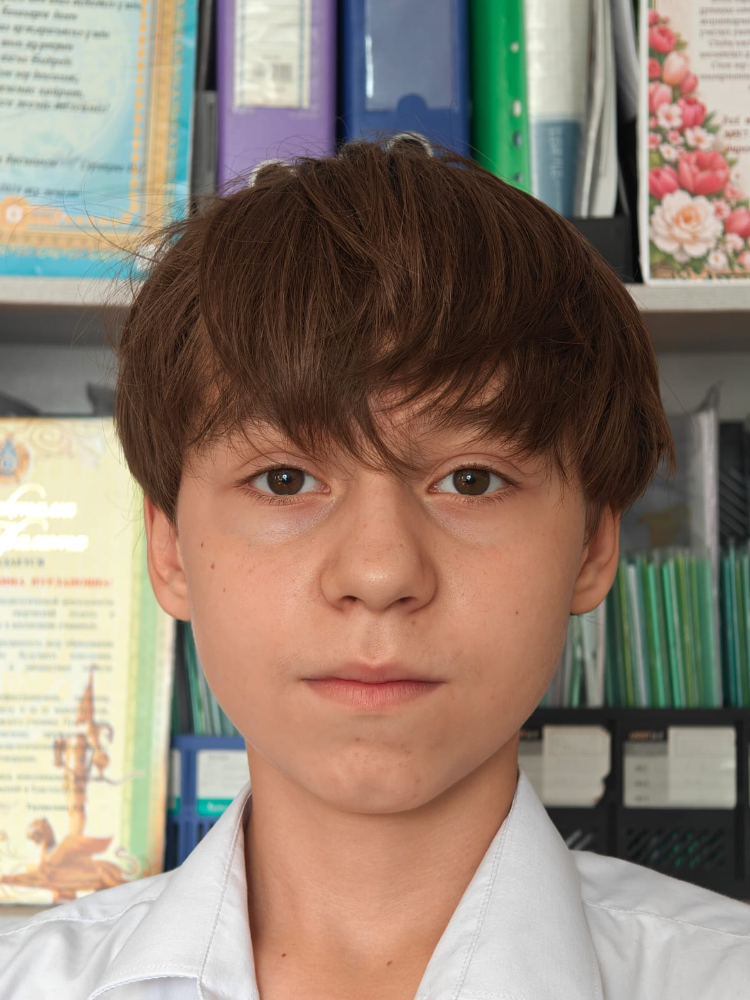
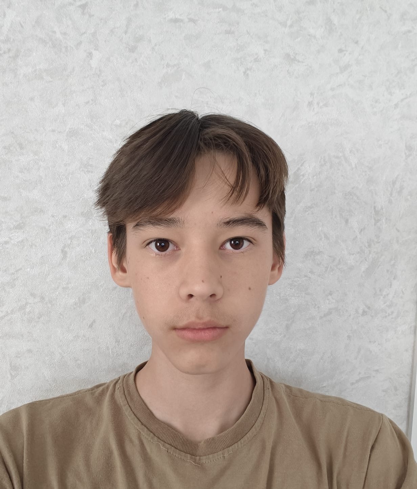
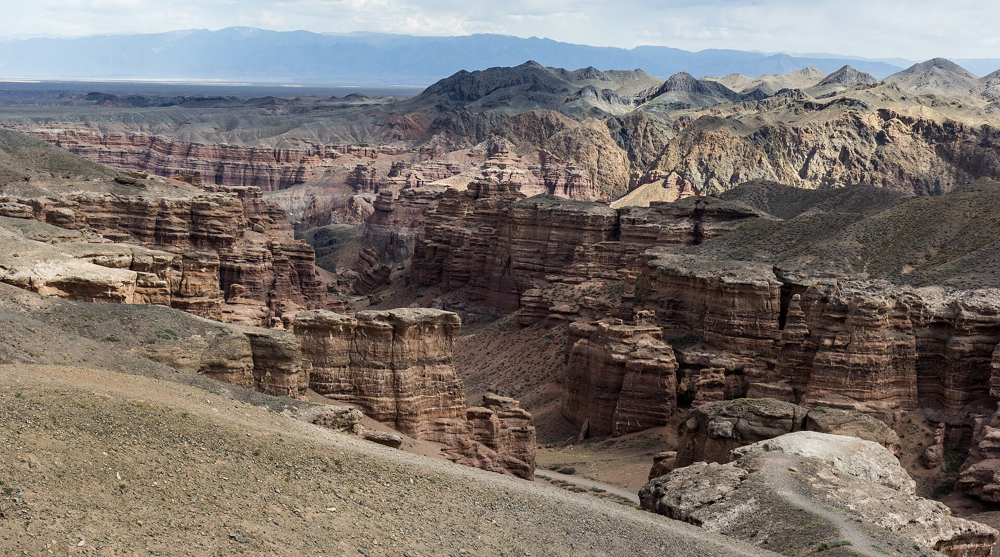
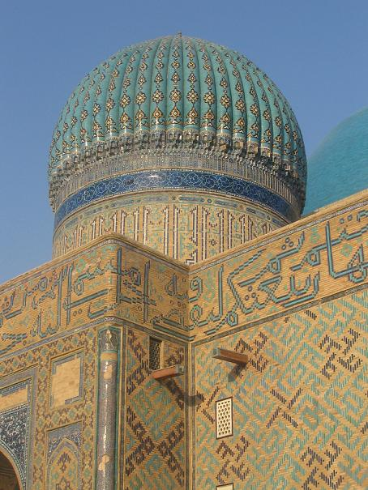
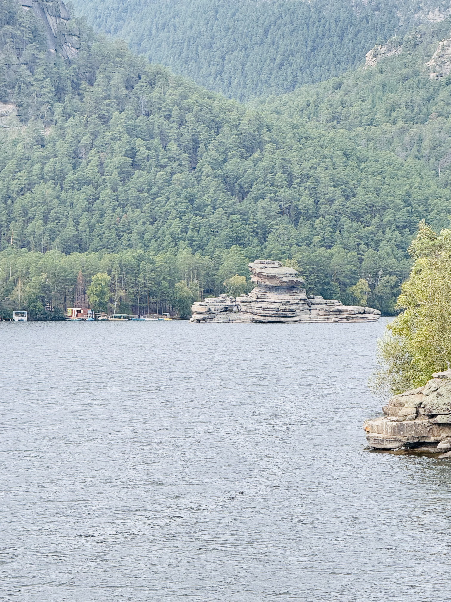
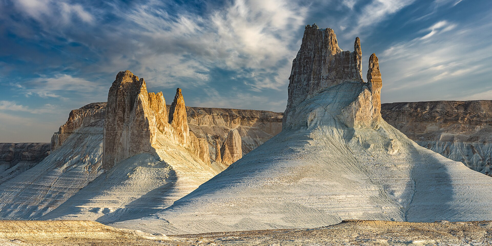
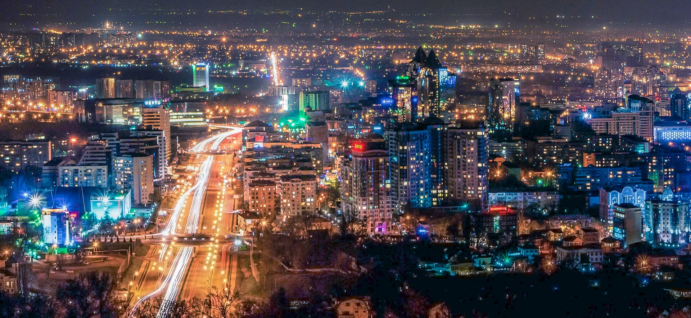
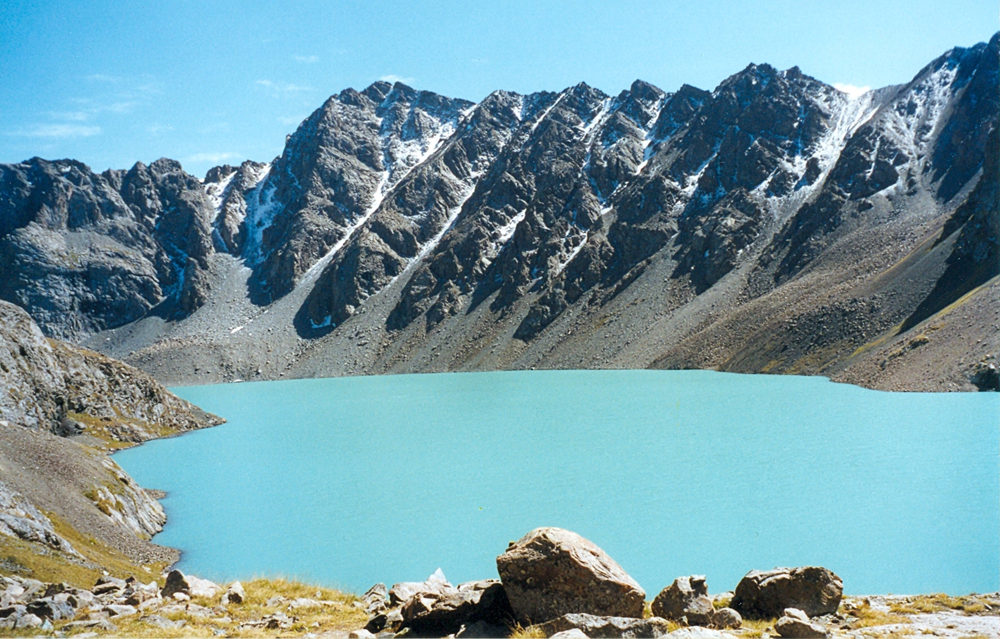

Яркие впечатления и незабываемые эмоции ждут тебя.
Выбрать тур
Чарын + Кольсай + Каинды + Алтын-Эмель: четыре природных чуда за одну поездку. Долина замков, каскадные озера и поющий бархан.

Тараз + Туркестан + Отрар + Сауран: святыни Великого Шелкового пути. Мавзолеи Арыстан-баба и Ходжи Ахмеда Ясави.

Астана + Бурабай: озера, сосновые боры и легендарные скалы без долгих переездов. Голубой залив, Окжетпес и Жумбактас.

Актау + Бозжыра + Шеркала + Торыш: пустыня, каньоны и ночевки под звездами. Белые меловые уступы и долина каменных шаров.

Медеу + канатка на Шымбулак + закат на Кок-Тобе. Три точки за один день: высокогорный каток и панорама Алматы.

Алматы/Семей + Алаколь: минеральная вода, пляж и мягкий ритм восстановления. Бирюзовая вода, богатая солями и микроэлементами.